Visual Studio Codespace 협업기능
사용방법
1. Azure Account 설치
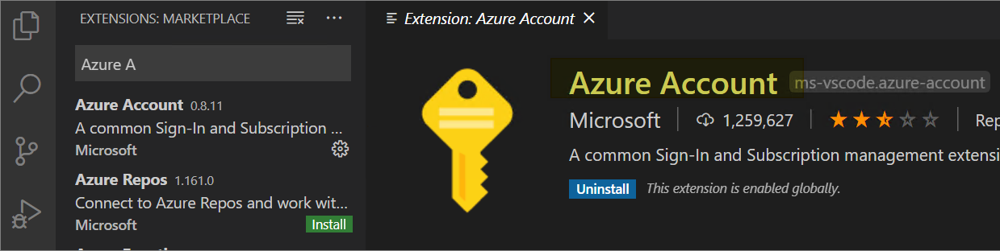
2. Live Share Extension 설치
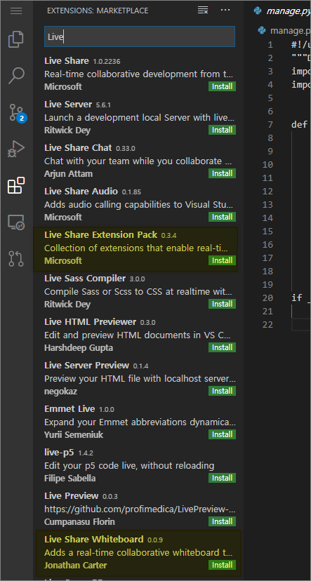
Live Share Extension PackLive Share Whiteboard- 설치 후 Reload
3. Start (세션 시작)
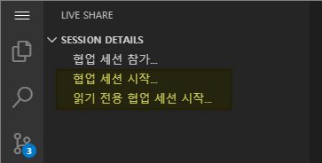
- 협업 세션 시작을 통해 시작할 수 있으며, 세션 만들어지고 url공유 또는 초대 메일를 통해 세션에 참가 가능하다.
- 읽기전용 세션은 참가자는 수정권한이 없으며, 오직 읽기만 가능하다.
4. Join (세션 참가)
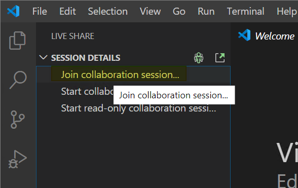
- 초대 url을 통해 web에서 실행하거나, app에서 url을 입력해서 참가 할 수있다.
5. Terminal Share
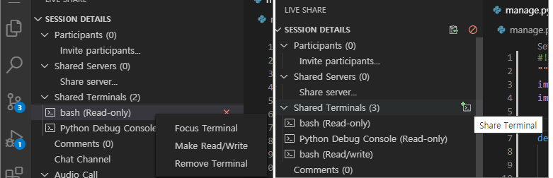
- Terminal을 공유하고 하나 혹은 다수의 터미널에서 작업이 가능하다.
6. Server Share
- webserver와 같은 만들어진 서버를 Share 할수있다.
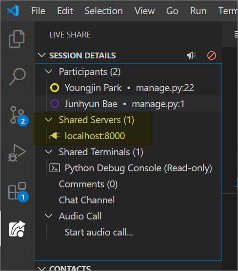
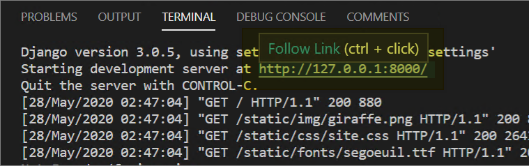
내부 기능정리
- 협업기능 사용 예시 전체화면.
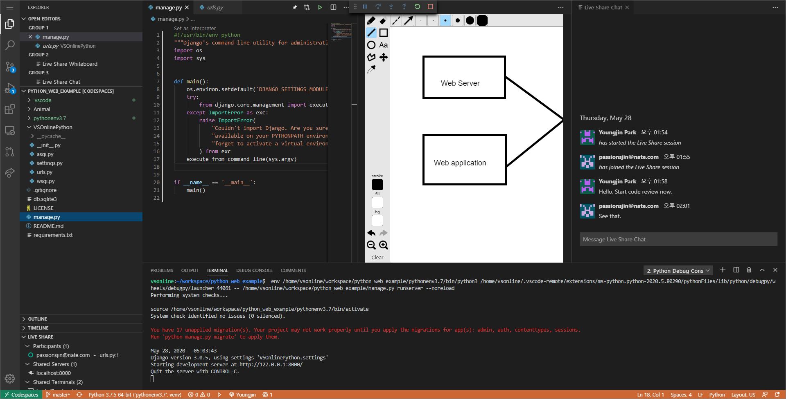
Attention
- 코드 편집중 attention 기능을 활성화하면, 참가자들에게 편집중인 코드 라인을 보여준다.
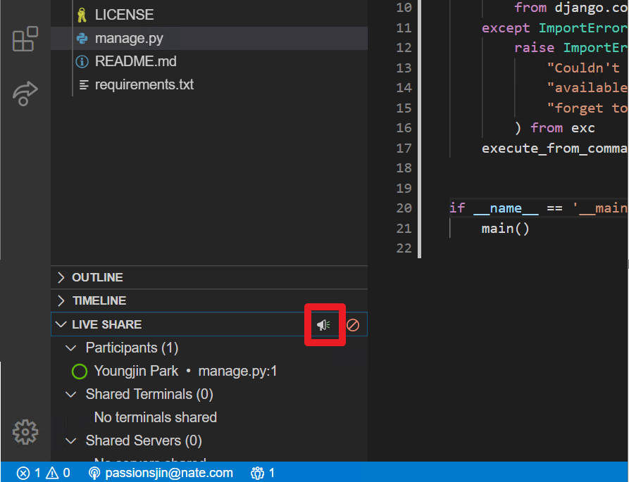
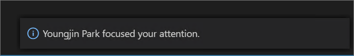
Chat
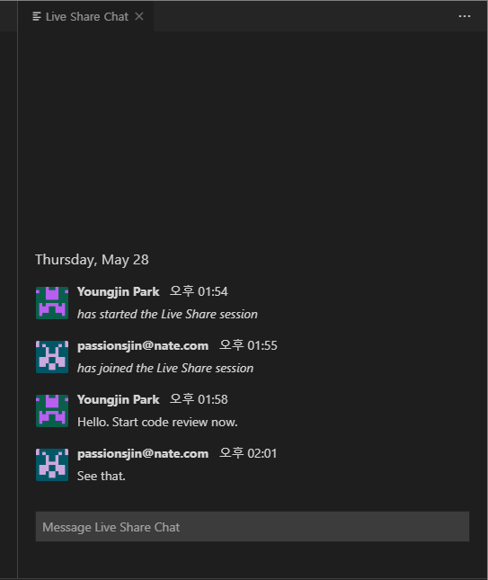
Audio Call
- 추후 예정.
Whiteboard
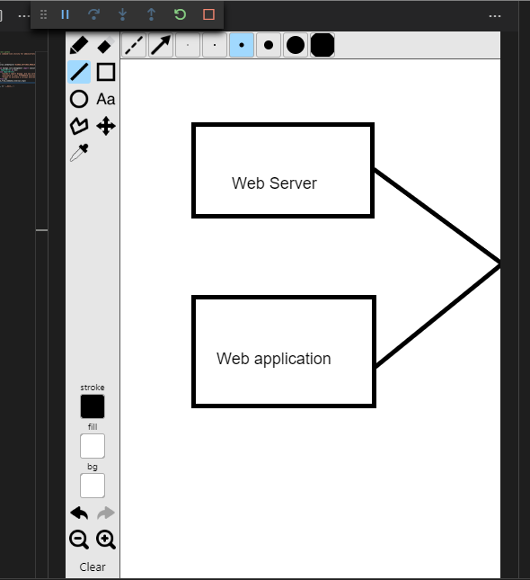
참고 및 에러슈팅
- Edge에서는 지원안함. (Preview라서 지원하지않는다고 뜸)
- Web에서 Live Share 참가자는 chat, whiteboard 기능을 쓸수 없음.
- Visual Studio Code 앱에서 Live Share 오류시
- 오류내용
An update or installation of VS Live Share failed due to a corrupted download. Please uninstall and reinstall the extension to resolve.
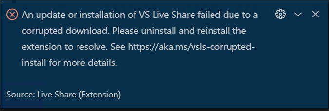 - 해결방법
version 1.0.1510 으로 install혹은.Net core runtime 설치
- 오류내용
후기
- Visual Studio Codespace인 경우, 하나의 VM위에서 프로젝트가 동작한다. 따라서, 하나의 환경에서 동일한 디버깅이 가능하다.
- 동일한 화면을 공유하는 스크린쉐어를 통한 협업보다, 각자가 하고싶은 행동이 가능해 시야 넓은 협업이 가능하다.
- 다양한 협업기능을 제공하고 있다. ( audio, chat, whiteboard 등)
- 아직 Preview 단계이다.
- Web 환경에서는 제약사항이 많은 듯 하다.